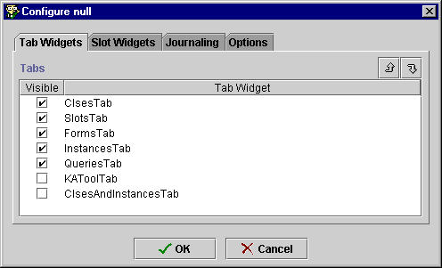
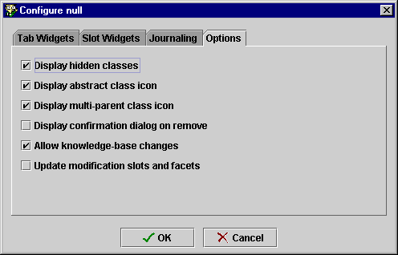
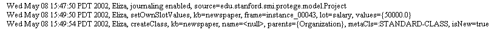

Configuring a Project
Configuring a Project

You can change the project configuration using the project Configure
dialog box. This dialog box allows you to customize your project window. Some of
the available options are:
Configuring the Project Tabs
To configure the project display:
- Select Configure... from the Project menu.
The Configure dialog box opens.

- Make sure Tab Widgets is selected. It will show the tabs available
for your project. Tabs with a mark in the box are visible; others are
hidden. By default, a project displays the Clses Tab, Slot Tab, Forms Tab,
Instances Tab, and Queries Tab. All projects also include the KAToolTab
(Knowledge Acquistion Tool) and the ClsesandInstancesTab. Additional tabs
may show in this window, depending on the project.
- If you wish to hide a tab, click to remove the mark from in front
of it. For example, if you are giving your project to someone to enter
instances, you might wish to hide the other tabs.
- If you wish to display a tab, click to add a mark in front of it. For
example, you might want to display the Classes and Instances Tab, for a
unified view of your classes and instances.
- If you wish to configure a tab, double click on the tab item in the tab widget list.
If the tab is configurable, a dialog box will appear.
- Click OK to close the dialog box and see your new configuration.
Configuring Options
To change project options:
- Select Configure... from the Project menu.
- Click the Options tab in the Configure dialog box.

- This tab allows you choose the following options:
- Display hidden classes: Allows you to choose whether or not you can
see the classes you hide using the right mouse button.
- Display abstract class icon: Allows you to choose whether or not the
icon is shown on Abstract classes.
- Display multi-parent class icon: Allows you to choose whether or not
the icon is shown
on classes with multiple super classes.
- Display confirmation dialog on remove: Allows you to add a warning
when you remove a slot from a class. Recall that when you remove a slot,
the slot remains in the project, but is simply removed from the current
class. You always receive a warning on a delete.
- Allow knowledge-base changes: Allows you to lock the knowledge base so
it cannot be changed by the viewer.
The remaining options are advanced and are not described here.
- If you wish to select an option, click to mark it. For example, you might
want to display the Classes and Instances Tab, for a unified view of your
classes and instances.
- If you wish to remove an option, click to remove the mark.
- Click OK to close the dialog box and see your new configuration.
Enabling Journaling
Journaling allows you to keep a record of all the changes that you make to a
project. Changes are stored in an ASCII (text) file, with one line for each
change you make. The file is no
To enable journaling:
- Click the Journaling tab.
- Make sure that Enabled is selected.
- If you want to change your user name, enter a new name in the User
entry field.
- Click OK.
The journaling file is created in the same directory as the project, with a
.pjrn extension. It can be read using any text editor.
Such a file might look like this:

Next: Generating HTML From a
Project
Project Table of Contents